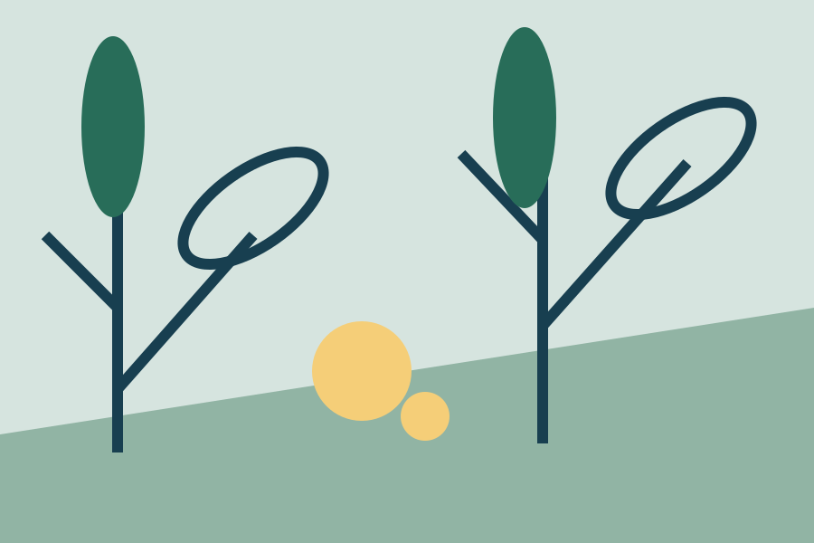

Space for new questions
An imagined learning commons makes room for collaboration.
Read the commons storyThe Northvale story
From campus conversations to questions in the field. Fictional stories from our imagined university community.

Featured research • Fictional story
A sample field course connects careful observation, biological questions, and a familiar patch of green.
Read the story →An imagined learning commons makes room for collaboration.
Read the commons storyA campus garden becomes a place to share skills and curiosity.
Read the garden storySample research story
In this fictional field course, students return to the same plot through a changing season. They keep notes, compare observations, and learn how a careful question becomes an investigation.
The story illustrates an undergraduate research feature. It reports no real study, finding, or measured outcome.
Explore the sample Biology program →Sample campus story
Imagine a learning commons where a design sketch, a chemistry notebook, and a history discussion can share a table. The fictional commons brings study spaces and informal conversation together.
Sample community story
Students in our imagined campus garden trade observations about soil, plants, and changing weather. The plot becomes a place to listen, practice, and ask a new question.
No real media coverage is attributed to this fictional university. These local sample stories stand in for the source’s media feature group.